ART2 · Original pixel art 33 additive drawings. Five qualities, seven skill frames and six quiet-state illustrations. All use the existing cafe-night-v1 palette and integer pixels. Runtime display follows the existing default-off original economy flag.
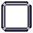
rune-frame-common48px · 220 bytes 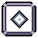
rune-slot-common48px · 302 bytes 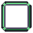
rune-frame-uncommon48px · 220 bytes 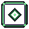
rune-slot-uncommon48px · 302 bytes rune-frame-rare48px · 220 bytes rune-slot-rare48px · 302 bytes 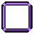
rune-frame-epic48px · 220 bytes rune-slot-epic48px · 302 bytes rune-frame-legendary48px · 220 bytes rune-slot-legendary48px · 302 bytes 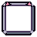
pet-frame-common48px · 252 bytes 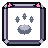
pet-slot-common48px · 333 bytes 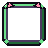
pet-frame-uncommon48px · 252 bytes 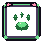
pet-slot-uncommon48px · 333 bytes 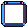
pet-frame-rare48px · 252 bytes 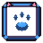
pet-slot-rare48px · 333 bytes 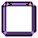
pet-frame-epic48px · 252 bytes 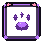
pet-slot-epic48px · 333 bytes 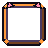
pet-frame-legendary48px · 252 bytes 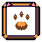
pet-slot-legendary48px · 333 bytes 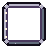
skill-frame-seamsweep48px · 231 bytes 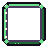
skill-frame-kettlepulse48px · 233 bytes 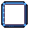
skill-frame-hempair48px · 233 bytes 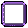
skill-frame-windowthrust48px · 232 bytes skill-frame-rafterecho48px · 233 bytes 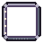
skill-frame-lanternarc48px · 233 bytes 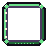
skill-frame-mossparcel48px · 232 bytes 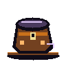
bag-empty96px · 410 bytes 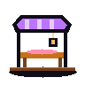
market-empty96px · 366 bytes 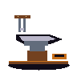
forge-no-materials96px · 314 bytes 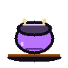
no-wallet96px · 427 bytes offline96px · 323 bytes 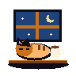
landing96px · 487 bytes